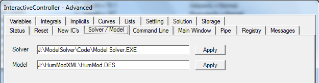

2012-02-12. Expanded the Lifestyle menu Diet to include Hunger | Thirst and Control. Temperature of ingested food and water may now be specified.
2012-02-12. Bumped version number to 2.0.9.
2012-02-11. Replaced the numerical methods in the pulmonary circulation with a better way to do the hemodynbamics. I like the results.
2012-02-11. Rescaled initial plasma protein to get an initial COP of 28 mmHg. COP was starting at 26, which caused some plasma leak into the IFV. Then scaled interstitial protein for the first time to get an initial COP of around 8 mmHg.
2012-02-11.Added an Energy section, with Energy-Stores and Energy-Tools structures. The first idea here is to calculated and display total energy stored in the body, including lipid and glycogen. Panel is visible as Energy Stores on the Metabolism menu.
2012-02-11. Bumped version to 2.0.8.
2012-02-10. VascularCompartments keep their name in structures, but are displayed under Circulation as Blood Vessels. Then in the Blood Vessels menu, there is a Great Veins menu selection. It shows panels for Superior Vena Cava, Coronary Sinus and Inferior Vena cava.
2012-02-10. Revised Circulation | OrganFlow to prepare for a superior and inferior vena cava. Right and left hearts now drain into the right atrium through the coronary sinus, as recommended by Marek.
2012-02-10. Bumped version to 2.0.7.
2012-02-09. Fixed middle and lower torso water problem as reported by both Marek and Radu.
2012-02-09. Add lots of new pages to the Normal Values Web site.
2012-02-08.Adding spreadsheet sheets and Web pages to Normal Values in HumModRepository.
2012-02-08. Cleaned up the layout in respiratory muscle size. There was groupbox overlap.
2012-02-06. The idea right now is to put a lot of function into a spreadsheet so that model scaling becomes algorithmic. So far, so good. Added the basic building blocks like organ mass and organ blood flow. The tougher stuff will come later.
2012-02-05. Redesigned the Normal Values section of the
HumModRepository and started adding pages.
General - Organ Mass
General - Gender
General - Blood Pressures
General - Blood Flow
2012-02-04. Added major new section to HumModRepository titled Normal Values with subsections Male 37 Years and Female 37 Years.
2012-02-04. Bumped version number to 2.0.6.
2012-02-03. Increased the initial CO2 mass in the brain a little to get a better starting brain pH.
2012-02-03. Changed the name of BloodPh structure to BloodPhValues.
2012-02-03. Add groupbox that announces gender at gender specific organs : ovaries, uterus, testes.
2012-02-03. Removed stimulators menu item and panel from Intervention. Model had a couple of neural stimulators but I'm switching to clamps to have consistency across the model.
2012-02-03. In menus and panels, RHPumping goes to RightHeartPumping, LHPumping goes to LeftHeartPumping and Contractility goes to HeartStrength. Left Heart and Right Heart Heart Strength, Contractile Protein and Work get group boxes -- in one case to separate radiobuttons and in all cases to improve the look.
2012-02-03. Arterial hemorrhage can now be fixed rate or pressure driven. Panel is under Trauma.
2012-02-03. Bumped version number to 2.0.5.
2012-02-02. Modeled coronary sinus. Variables are
2012-02-02. Added posture energy. The code is in PostureEnergy. The panel is under Miscellaneous | Orthostasis.
2012-02-02. Added heart mechanoreceptors code and panels at autonomics afferents and autonomics CNS. Tidied up vagus nerve.
2012-02-02. Bumped version number to 2.0.4.
2012-02-01. Removed SequesteredBV from the Nerves | Autonomics | Efferents menu. Installed Alpha Receptors menu item at Miscellaneous Orthostatics | Sequestered Blood. Added a panel. Edited sequestered blood in arteries and veins to show effect of alpha agonist on pressure-volume relationship.
2012-02-01. Renamed the SympsChemo structure to ChemoreceptorsCNS. Then wrote the code and panel for the CNS processing of chemoreceptor afferent nerve activity.
2012-02-01. Added code and panel for Cushing response.
2012-02-01. Added code and panel for CNS trophic factor.
2012-02-01. Bumped version number to 2.0.3.
2012-01-31. Edited code, added panels and boxes for afferent autonomic nerves and central integration of the metaboreflex. Also fleshed out its effect on the respiratory center.
Completing and redoing chemoreceptors.
2012-01-31. Bumped version number to 2.0.2.
2012-01-30. Added a data set to the HumModRepository. It is visible at Data | Acid-Base | Ketoacidosis.
2012-01-29. Two structures were added under Structures \ Morphology. They are Volume.DES and Density.DES. These structures calculate the volume and the density of the body.
Then Display\Diagnosis was edited to replace Morphology menu item with a Size menu. The Size panels show morphology, body mass, body volume and body density in detail.
2012-01-29. Added group boxes and tidied up panels for
Display\Hormones\CRF\...
Display\Hormones\Cortisol\...
Display\Hormones\PTH\...
Display\Hormones\Vitamin D\... 4 Panels.
2012-01-29. Added tissue details to Pancreas. Details are visible in Organs | More | Pancreas.
2012-01-29. Added tissue details to Adrenal Gland. Details are visible in Organs | More | Adrenal Gland.
2012-01-29. Bumped HumMod XML version number to 2.0.1. Plan to bump daily now with all of the edits going in.
2012-01-28. With the Win32 library (HumMod.EXE), the programmer must group the radiobuttons into functional groups. With C# and WinForms, all of the radiobuttons with the same parent are considered to be in the same group. I had some panels with more than one group of radiobuttons on the surface. Parenthood was clarified by putting groups of buttons in appropriate group boxes. Panels that were edited :
Display\Hormones\ACTH\...
Display\Hormones\Calcitonin\...
Display\Hormones\Cortisol\...
More panel edits to follow.
2012-01-28. Installed placeholder folders and files for adrenal gland and pancreas. Organ weights are visible at Organs | More. Folders and files created :
Structure\AdrenalGland\...
Structure\Pancreas\...
Display\Tree\Organs\More\AdrenalGland.DES
Display\Tree\Organs\More\Pancreas.DES
Display\Organs\More\AdrenalGland\...
Display\Organs\More\Pancreas\...
2012-01-28. Thanks to Drew Pruett for this fix. And also Marek. Renin flux between free renin and granules had derivative signs reversed, which violated conservation of mass and caused big problems in many simulations after time had advanced about a week. Files edited :
Structure\ReninGranules.DES
Structure\ReninFree.DES
Structure\Renin.DES
Display\Hormones\Renin\Kidney\Granules.DES
Display\Hormones\Renin\Kidney\Free.DES
2012-01-27. To get solution control and display information from the model solver, the model controller sends a requestcontrollerinfo/ empty message. The controller has a response that was prepared during model parsing and replies with a controllerinfo ... /controllerinfo message wrapped around the info.
2012-01-27. You can edit the content for the hidewindow element below to True to hide the model solver's main window. Generally, Windows won't let you hide an application's main window, but you can minimize and not show it in the task bar to make it completely disappear.
WindowState = FormWindowState.Minimized ;
ShowInTaskbar = false ;
If there is a messup, use the task manager to mop up. Note that the only way to get the window back is to edit the INI file back to False.
2012-01-27. The model solver uses an INI file in place of Windows
registry.
<ini>
<windowtop> 136 </windowtop>
</ini>
<windowleft> 776 </windowleft>
<windowhigh> 174 </windowhigh>
<windowwide> 341 </windowwide>
<windowstate> 0 </windowstate>
<pipeinterval> 200 </pipeinterval>
<hidewindow> False </hidewindow>
2012-01-27. Model controllers launch the model solver and pass the model name and location in using the command line. On the desktop it might be possible to use the defaults by putting the model controller, model solver and model root file all in the same folder.
But a better idea might be to specify the model solver and model using the model controller's Advanced menu selection.

The defaults are
Solver : Model Solver.exe
Model : HumMod.DES
2012-01-27. The Model Solver now parses the entire model and tucks information that might be needed by the model controller into a cache.
2012-01-27. The development and use of Builder and BuilderXML has been discontinued. Repository content has been moved to the Archives repo and the Builder and BuilderXML repo's have been deleted.
2012-01-26. I created separate documentation sections in HumModRepository
for HumMod(1_6) release and HumMod(2_0) being developed.
2012-01-19. Created this log to record the edits applied to HumMod's XML files. T.C.